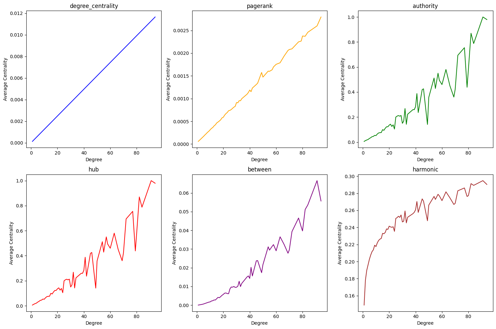

The network
Every edge points from an origin to a destination and carries the number of passengers on that route. Atlanta handles the most passengers by far, about 71 million arriving and departing in this data, followed by Chicago O'Hare, Dallas Fort Worth, Los Angeles and Las Vegas.
Who matters most?
"Important" depends on what you measure, so I ranked every airport six ways: weighted degree, PageRank, authority and hub scores, betweenness and harmonic centrality.
FIG. 2 · Top five airports by four of the six measures. Authority and hub scores give the same top five as degree and PageRank, in a slightly different order.
Traffic measures agree
Degree, PageRank, authority and hub all pick the same five airports: Atlanta, O'Hare, Dallas Fort Worth, Los Angeles and Las Vegas. They mostly measure how much traffic flows through an airport.
Minneapolis is the connector
Minneapolis is not in the top five for traffic, but it has the highest betweenness: more shortest paths between other airports pass through it than through any other airport.
O'Hare is closest to everything
Ranked by harmonic centrality, which rewards being a few hops from every other airport, Chicago O'Hare comes first.
Close an airport
How many airports do you have to close before some part of the network can no longer be reached? I removed airports one at a time, most central first, until the network split. Pick a ranking to replay it.
The network turns out to be fragile in a very specific way. It is not that the country falls apart: it is that a few small airports have only one route. Carbondale, Illinois flies only to O'Hare, about 120 passengers each way, so closing O'Hare alone cuts it off. Brown Field in San Diego links only to Phoenix, which is why betweenness needs four closures.
Run in the other direction, the experiment tests how well each measure finds the airports that do not matter. Hub, betweenness and harmonic rankings keep the network connected until the very last airport, so they are the best at spotting truly peripheral nodes. PageRank and authority do poorly at this: closing their lowest-ranked airports splits the network after only 36 and 23 closures.
Zoom in: New York State
Inside the New York subnetwork, JFK leads on weighted degree, PageRank, authority and betweenness. Buffalo is the strongest hub.
FIG. 3 · The five New York airports with the highest weighted degree, with normalized centrality scores (loops and isolated airports removed).
State to state
Merging every airport into its state, and adding up parallel routes, gives a compact network of interstate travel. It is strongly connected: every state can reach every other.
FIG. 4 · The ten busiest state-to-state directions by passengers.
The single busiest direction is Florida to Georgia, with 6,584,065 passengers, closely followed by Georgia to Florida, which says a lot about Atlanta's role as a connecting hub for Florida travel. California, Florida, Texas, Georgia and Illinois lead in both incoming and outgoing passengers, and because the state network is so tightly connected, every state scores close to 1 on harmonic centrality.
Before the real data
To understand how the measures behave, I first generated a synthetic network of 10,000 nodes with a power-law degree distribution (a Chung-Lu graph) and compared each centrality measure against node degree. Degree centrality and PageRank grow almost linearly with degree, hub and authority scores climb towards 1 but get noisier for high-degree nodes, and harmonic centrality rises quickly before levelling off around 0.26 to 0.3.

ARRIVED
The full analysis, from loading the graph to every experiment on this page, is in one notebook.
Assignment for DS8014 Graph Mining, Toronto Metropolitan University. Route and airport data provided with the course.